Overview
In this project I show how homographies can be used to stitch photos into mosaics and to rectify images.
Part A · Image warping and mosaicing
A.1 · Shooting the pictures
I took Set 1 in my backyard, making sure to only rotate the camera and not move it. If I had moved the camera, objects close to the camera and far from it would have shifted by different amounts (parallax), and no single homography could line them all up. Set 2 came from screenshots of a video I took last winter in Japan.
Set 1 · Backyard, afternoon
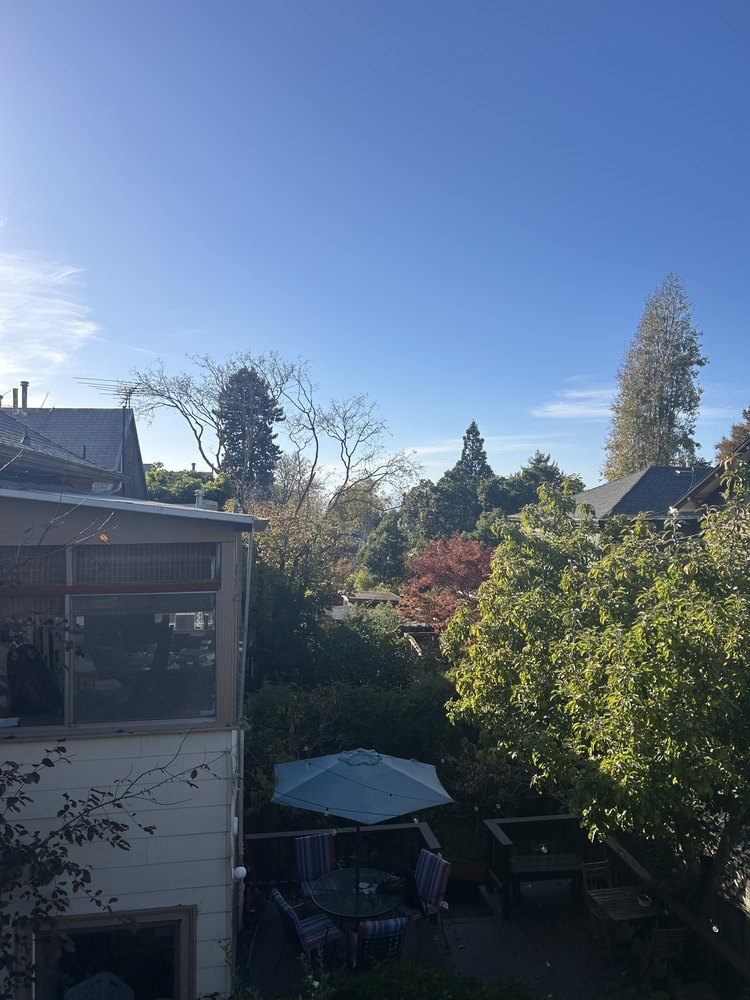
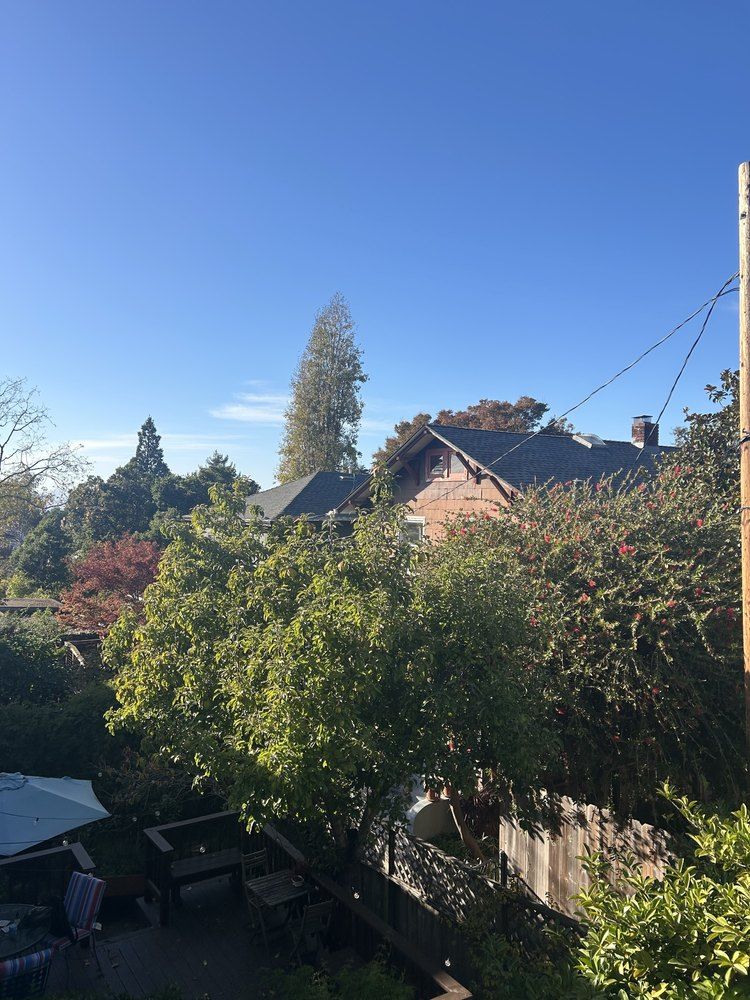
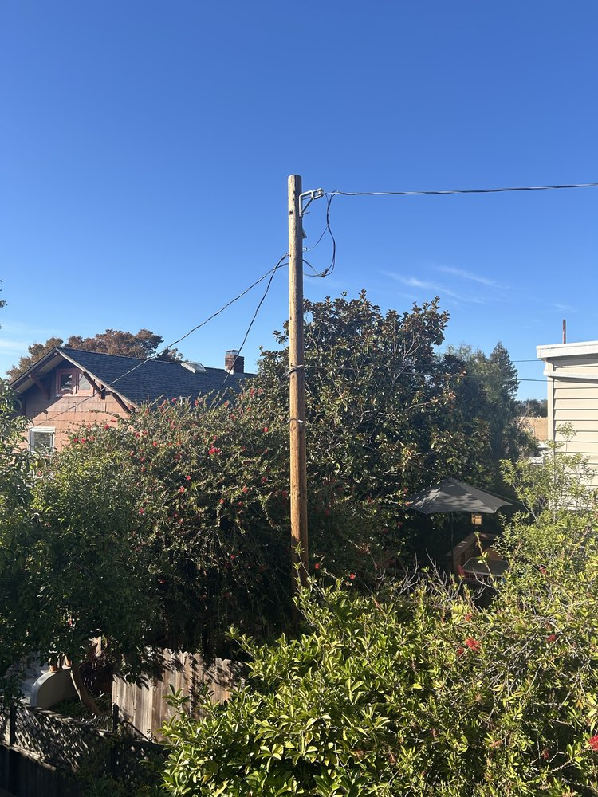
Set 2 · Snowy garden
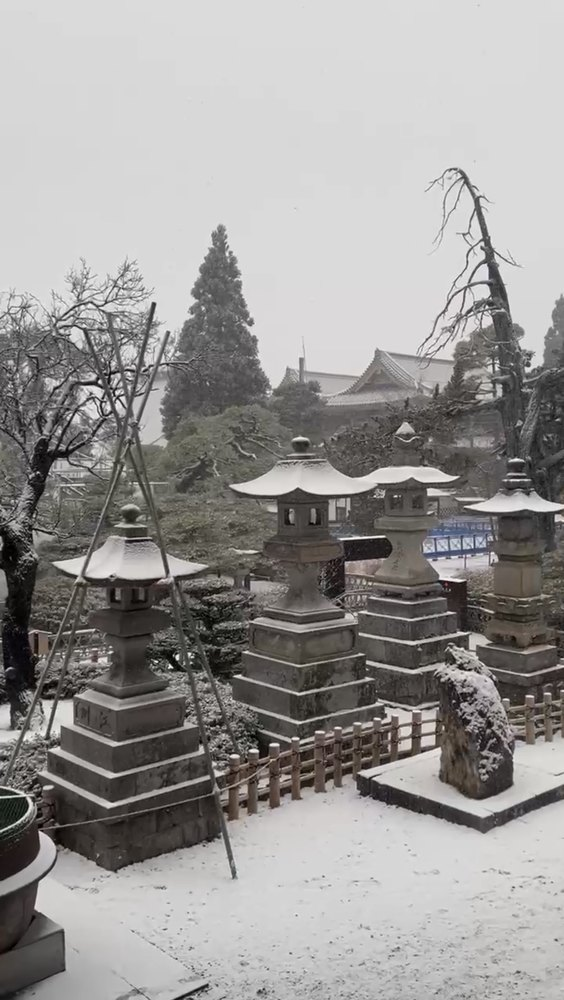
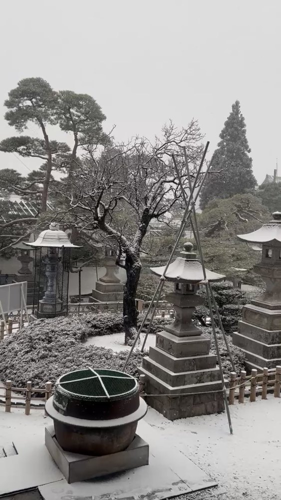
A.2 · Recovering homographies
A homography maps a point p = (x, y, 1) to p′ = Hp.
x' = (h11·x + h12·y + h13) / (h31·x + h32·y + 1)
y' = (h21·x + h22·y + h23) / (h31·x + h32·y + 1)
[ x y 1 0 0 0 −x·x' −y·x' ] · h = x'
[ 0 0 0 x y 1 −x·y' −y·y' ] · h = y'
h = [ h11 h12 h13 h21 h22 h23 h31 h32 ]ᵀCorrespondences · IMG_9412 → IMG_9411
I clicked points on well-defined features and avoided the trees, since they could move in the wind.
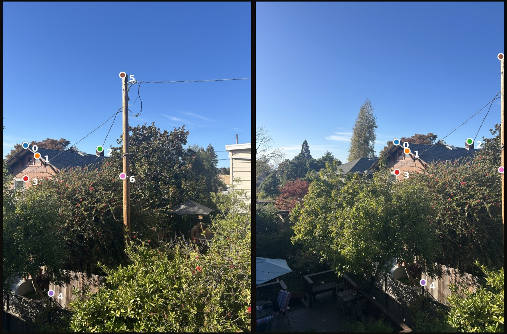
The system for IMG_9412 → IMG_9411
The 14 × 8 matrix A (left) and b (right).
[ 140 876 1 0 0 0 -119700 -748980 ] [ 855 ]
[ 0 0 0 140 876 1 -119770 -749418 ] [ 855.5 ]
[ 211.5 939.5 1 0 0 0 -194474 -863870 ] [ 919.5 ]
[ 0 0 0 211.5 939.5 1 -192571 -855415 ] [ 910.5 ]
[ 592.5 898 1 0 0 0 -770546 -1167849 ] [ 1300.5 ]
[ 0 0 0 592.5 898 1 -504810 -765096 ] [ 852 ]
[ 141 1079 1 0 0 0 -120978 -925782 ] [ 858 ]
[ 0 0 0 141 1079 1 -146640 -1122160 ] [ 1040 ]
[ 295 1777.5 1 0 0 0 -300015 -1807718 ] [ 1017 ]
[ 0 0 0 295 1777.5 1 -505040 -3043080 ] [ 1712 ]
[ 730.5 447.5 1 0 0 0 -1088445 -666775 ] [ 1490 ]
[ 0 0 0 730.5 447.5 1 -244352 -149689 ] [ 334.5 ]
[ 731.5 1063 1 0 0 0 -1092861 -1588122 ] [ 1494 ]
[ 0 0 0 731.5 1063 1 -749788 -1089575 ] [ 1025 ]Solving it gives
H = [ 0.543897 0.015509 725.65 ]
[ -0.327175 0.863124 106.309 ]
[ -0.000322756 -1.1425e-06 1 ]A.3 · Warping the images
Both warps use inverse warping. I first send the corners of the input through H to get the boundaries of the output, and then use the inverse of H to find where each output pixel comes from in the input. Output pixels that land outside the input stay black. I implemented nearest neighbor and bilinear interpolation. Nearest neighbor copies the closest input pixel. Bilinear takes the four surrounding pixels and weights them by how close they are.
For rectification the output box is clamped to at most twice the input size, because a strongly tilted plane can explode the dimensions of the output image (which happened in the olive picture).
Rectification
To test the warp on a single image, I click the four corners of something I know is a rectangle and map them onto an upright rectangle I define by hand.
Rectification 1 · Building
This one turned out pretty well since the rectangle is well defined and is a large part of the picture.
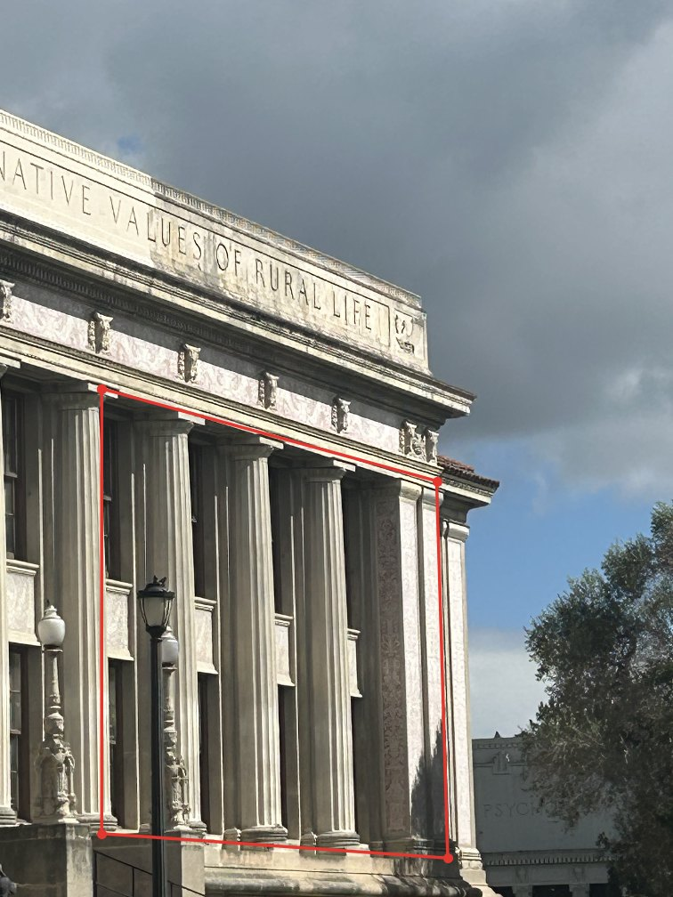
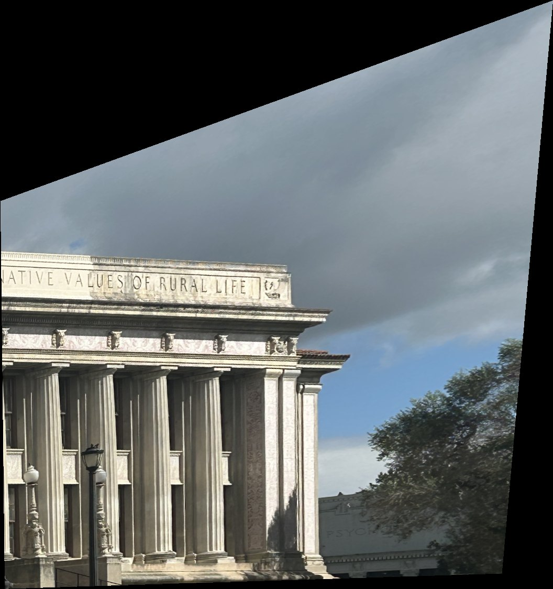
H = [ 0.948506 0.0088616 0.350836 ]
[ -0.397544 0.802381 125.139 ]
[ -0.000425584 7.79042e-05 1 ]Rectification 2 · Olive crate
My grandpa picked these olives from his garden with his friends! Unfortunately none of the crates were great rectangles to map but it kind of works?
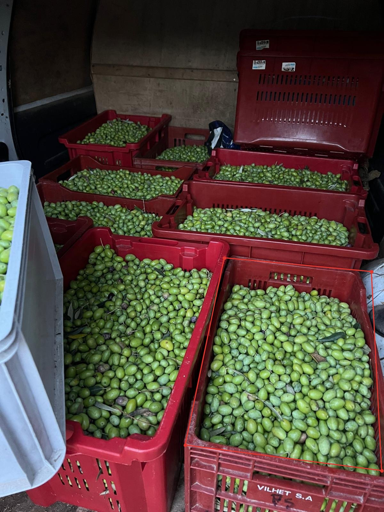
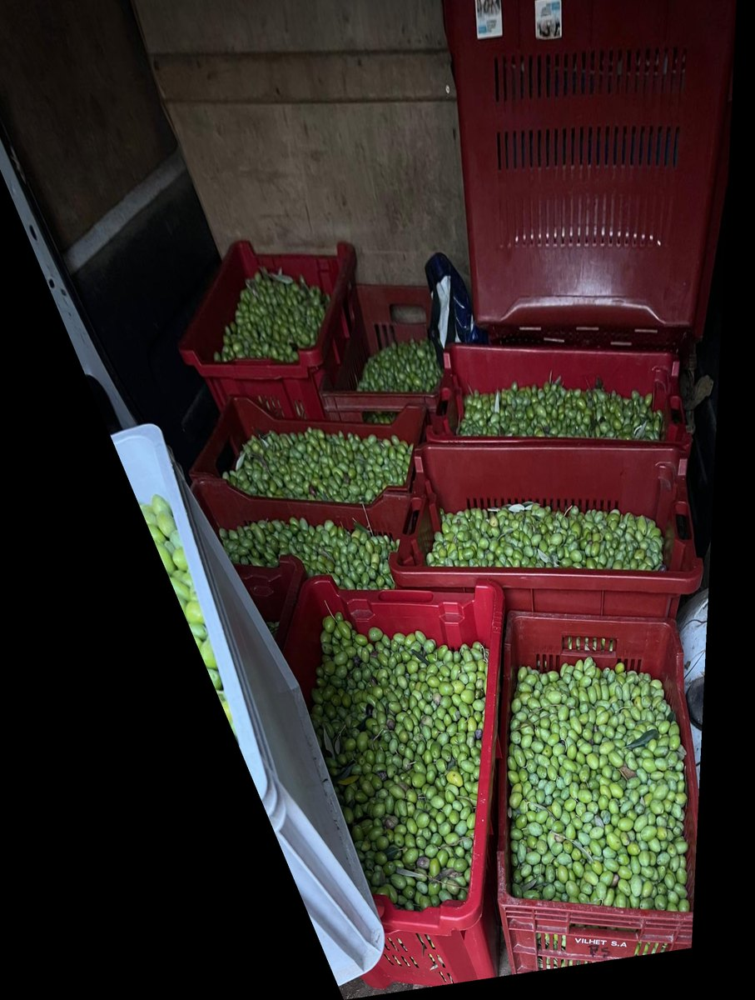
H = [ 2.05623 1.17073 -1075.47 ]
[ -0.280211 3.98222 -1507.26 ]
[ 1.49682e-05 0.001063 1 ]Nearest neighbor vs. bilinear
At full size the two look almost identical. But if you zoom into the text on the building, you can see that nearest neighbor leaves some edges rough, because neighboring output pixels repeat the same source pixel. Bilinear gives smoother edges because it averages the four nearest pixels every time. Bilinear comes at a cost: nearest neighbor does one lookup per pixel, while bilinear does four lookups plus the weighting arithmetic.
A.4 · Blending into a mosaic
For each set I keep the center image unwarped as the reference and warp the others into its plane with bilinear sampling, all in one shot:
- Compute the homography from each side image to the center image.
- Warp every image and use the union of their bounding boxes to size the final canvas.
- Give each image a weight that is 1 at its center and falls off linearly to 0 at its edges, warped along with the image. Pixels with no data get a weight of 0.
- Set each canvas pixel to the weighted average of all the images that cover it (feathering).
Feathering hides the exposure differences between frames. You can see below that the sky isn't the same color in each picture, but the blend smooths over it.
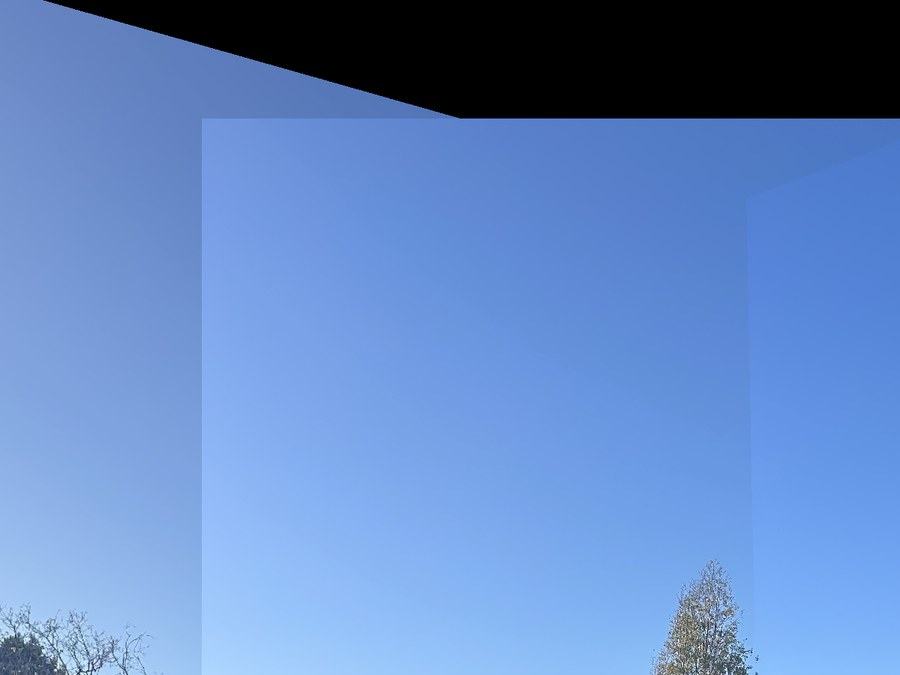
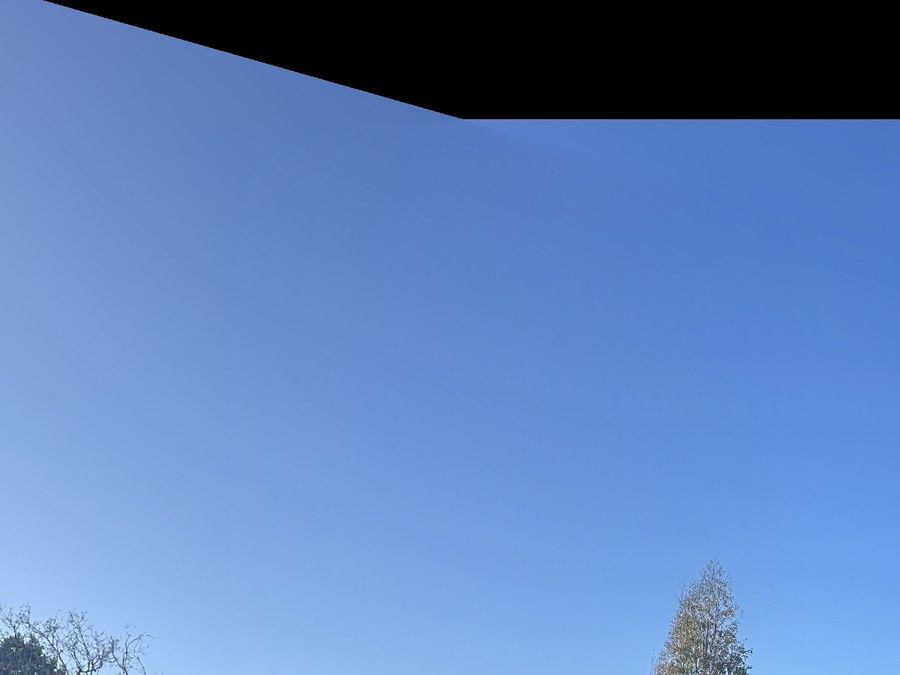
Mosaic 1 · Backyard
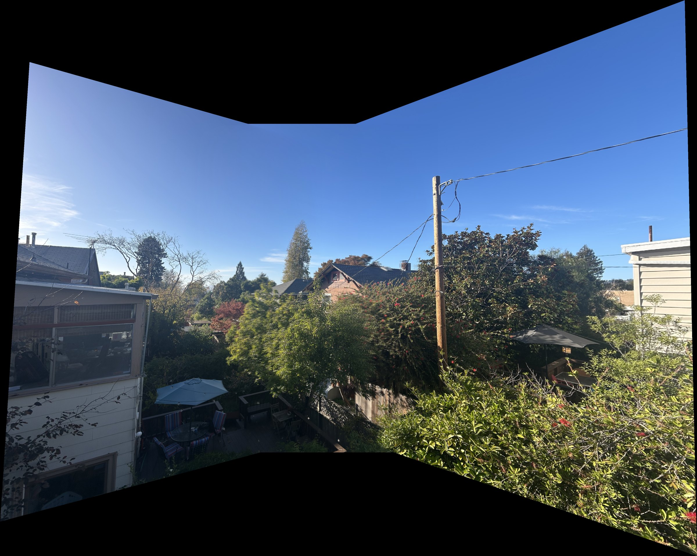
The trees moved in the wind and became a little blurred but otherwise it is a good view of my patio.
Mosaic 2 · Snowy garden
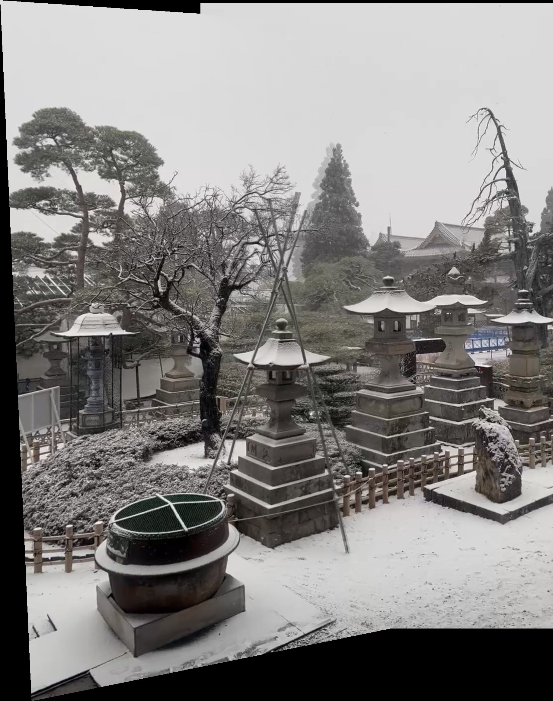
The blur of the poles most likely comes from me moving, but aside from that it looks good.
Mosaic 3 · Street at night
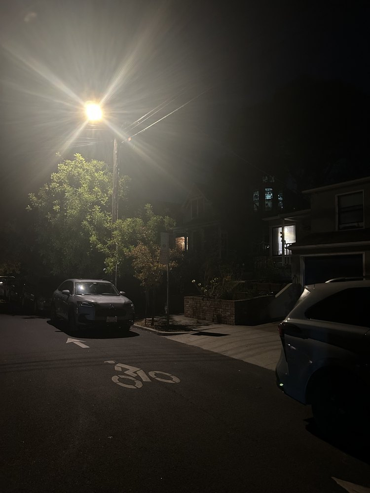
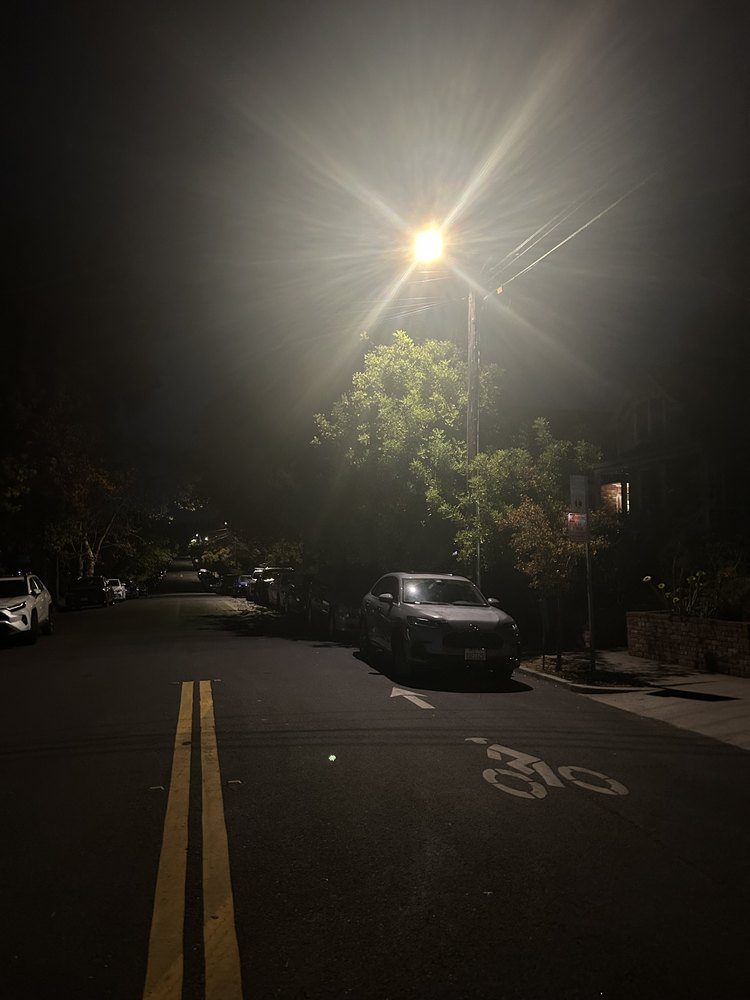
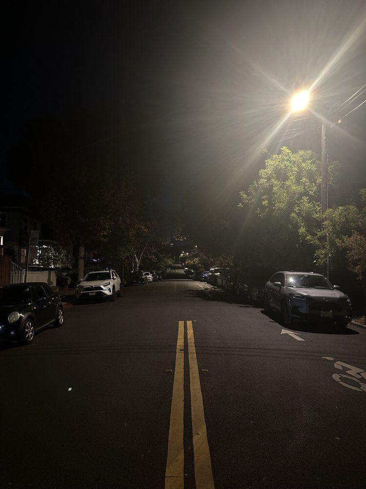
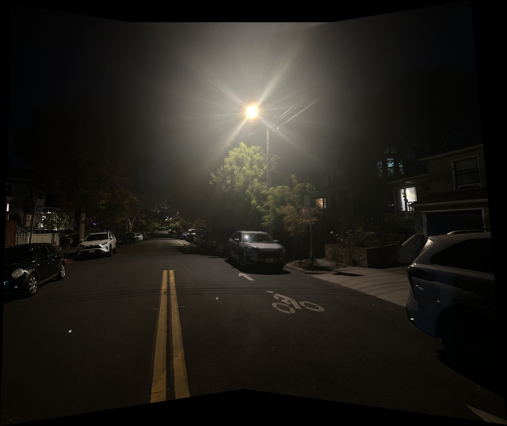
I had a hard time finding the correspondences for these pictures. It turned out much better than expected! I thought the bright light would be exposed differently in each picture, but it stayed pretty similar between them.